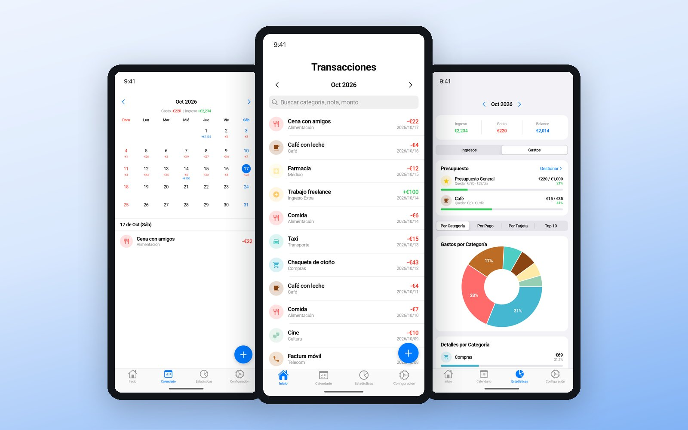
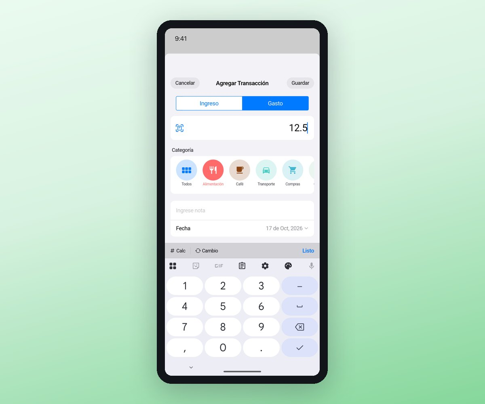
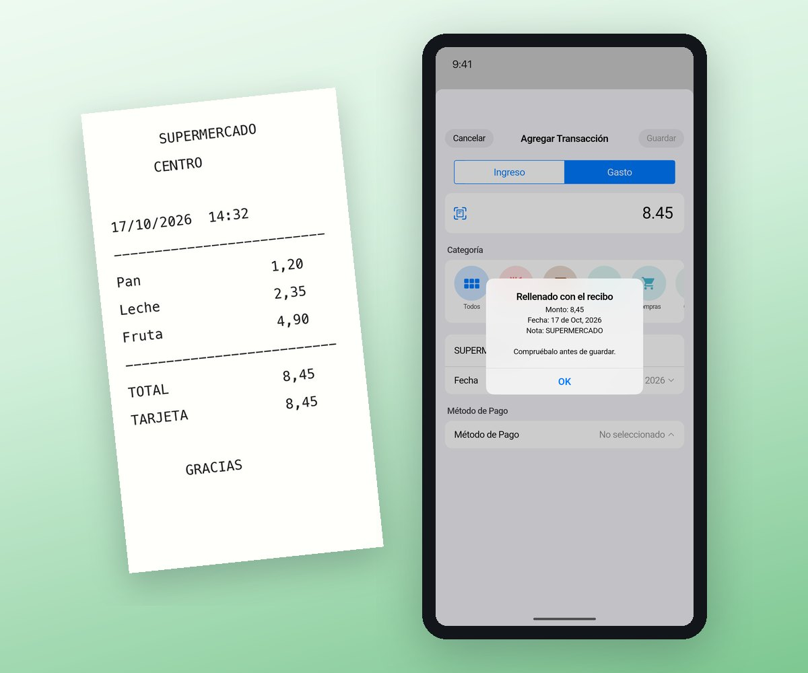
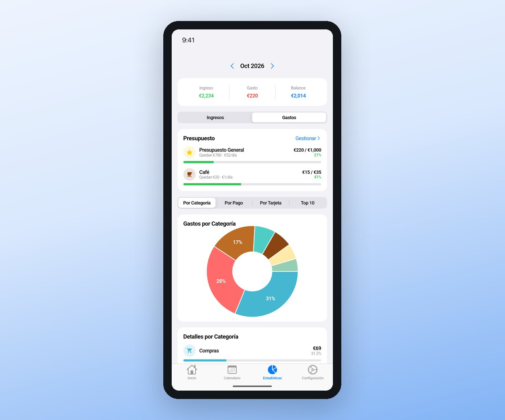
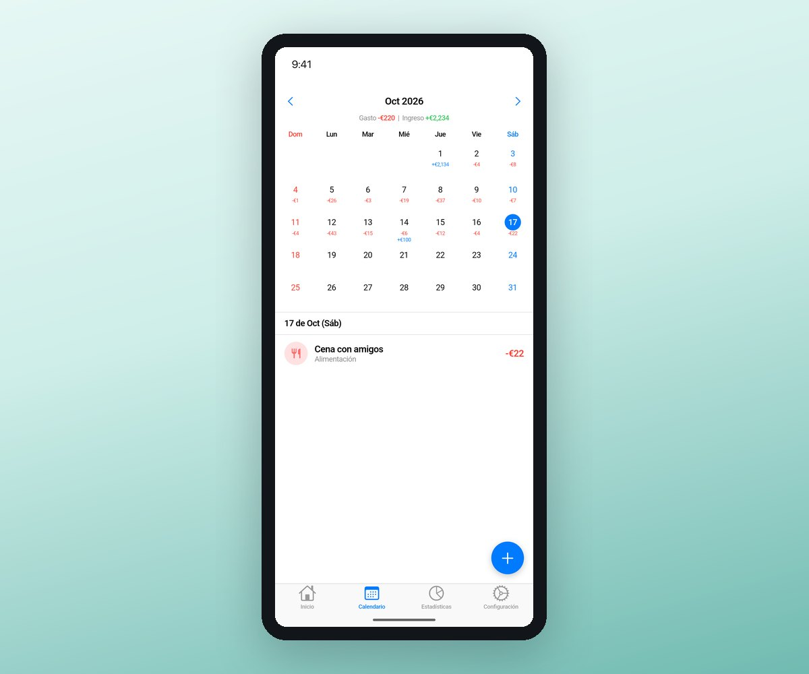
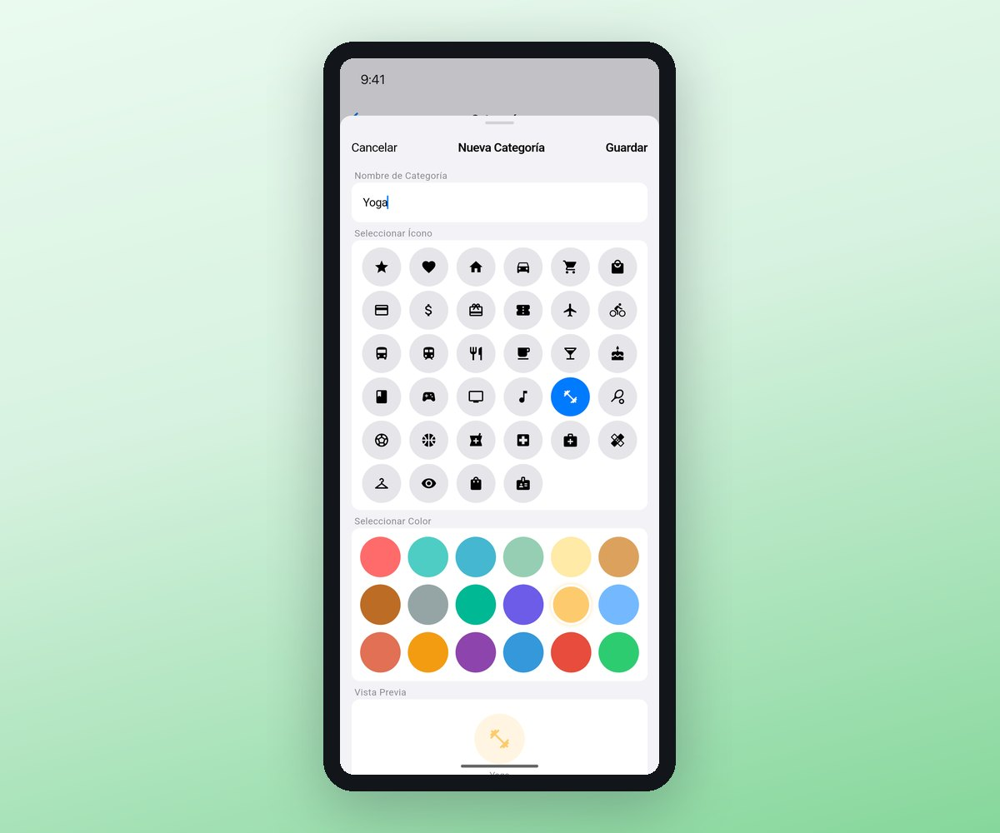
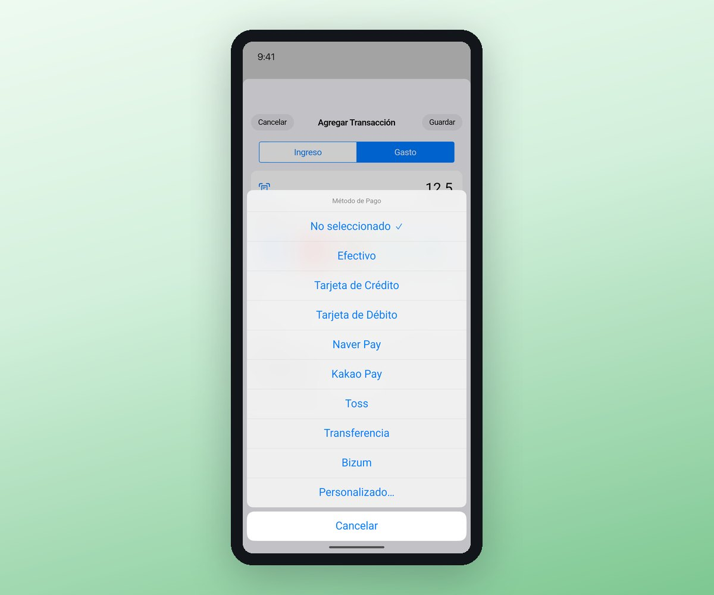
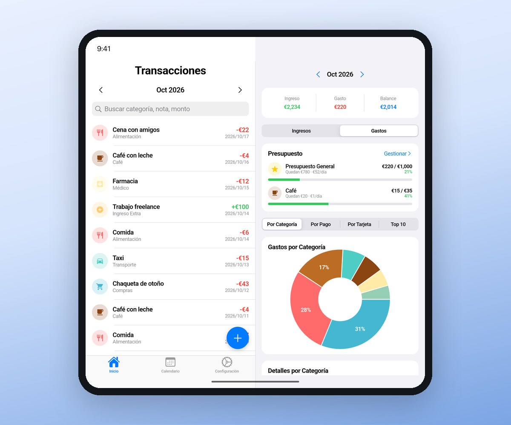

Toca la fecha, el importe y la categoría, y listo. Fotografía un recibo para rellenarlo, y deja que las estadísticas y el calendario te muestren adónde fue el mes. Sin registro ni conexión con el banco: tus datos se quedan en tu teléfono.


Fecha, importe, categoría y método de pago. El campo del importe trae calculadora y conversor de divisas, así que dividir una cuenta o pagar en otra moneda se resuelve al momento.

Haz una foto o elígela de tu galería y se leen y rellenan el importe, la fecha y el comercio. Revísalos y guarda.

Gráficos de anillo por categoría, método de pago y tarjeta, más tu Top 10. Fija un presupuesto para el mes o para una categoría y verás lo que queda y cuánto puedes gastar al día.

Bajo cada fecha del calendario aparecen los ingresos y gastos de ese día. Toca una fecha para ver solo ese día.

Elige un icono y un color para crear tus propias categorías. Las predeterminadas son solo el punto de partida: añade las que encajen con tu forma de gastar.

Si un método de pago o un emisor de tarjeta no está en la lista, escribe su nombre. Los nombres que escribas aparecerán la próxima vez.

En plegables abiertos, iPhone Duo y tabletas, tus movimientos quedan a la izquierda y las estadísticas a la derecha. Cambia de mes en un lado y el otro te sigue.
Para quién
Cada compra con su método de pago, tarjeta y nota.
Los anillos y el Top 10 muestran adónde va el dinero.
Cuatro toques por gasto y una foto por recibo: fácil de mantener.
Paga en cualquier moneda; se registra en la tuya al tipo del día.
Límites del mes y por categoría, con lo que queda siempre a la vista.
Sin cuenta ni conexión bancaria: todo queda en tu teléfono.
En pantalla grande, movimientos y estadísticas lado a lado.
Privacidad
No hay cuenta a la que atar tus datos ni servidor al que enviarlos. Cada movimiento vive en una base de datos del dispositivo y desaparece con la app. Las fotos de recibos se leen en tu teléfono y no se guardan. Lo que sale de la app: un código de moneda al consultar tipos de cambio, información de diagnóstico como el modelo del dispositivo y la versión de la app que envía el lector de recibos (Google ML Kit) y, como la app es gratuita y muestra un anuncio, el identificador de publicidad y la información del dispositivo que recoge Google AdMob. Todo está en la política de privacidad.
Gratis en la App Store y en Google Play. Funciona sin conexión: la red solo se usa para los anuncios y para los tipos de cambio.